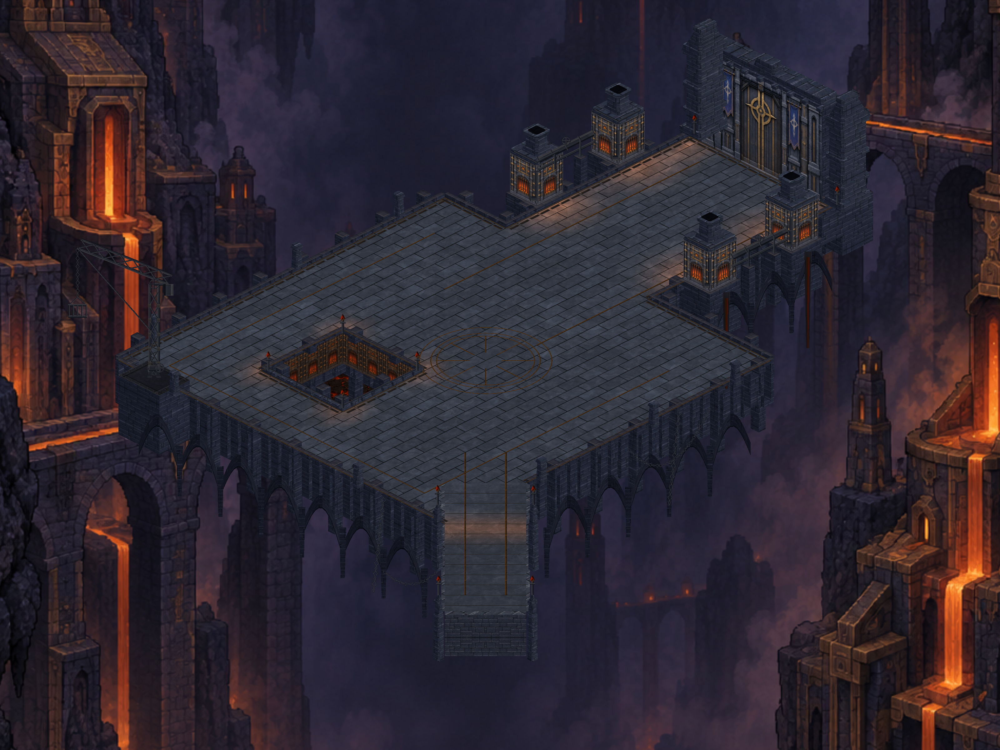
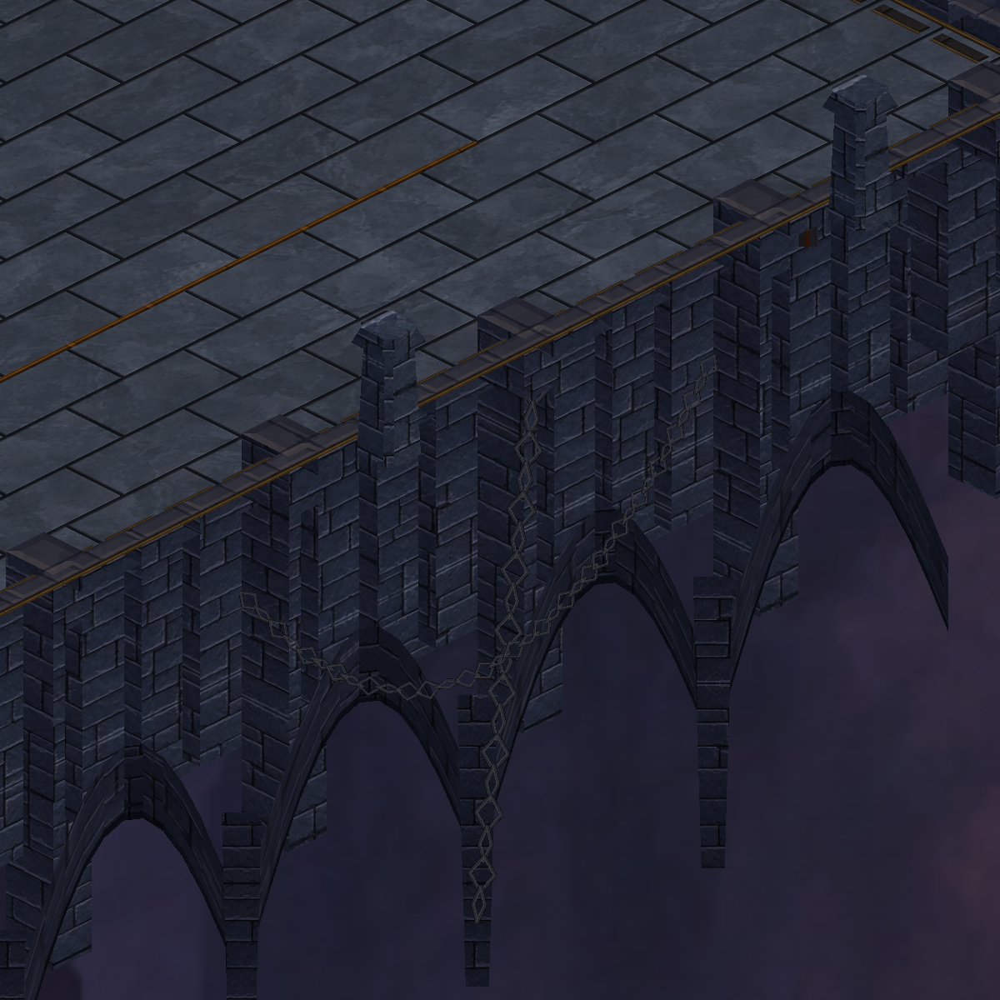
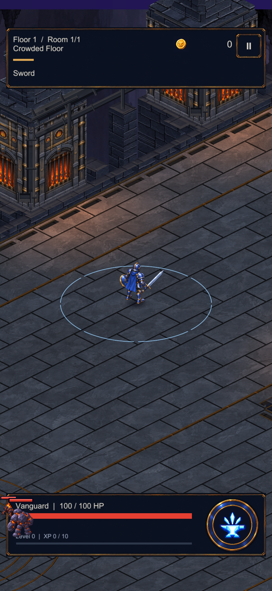
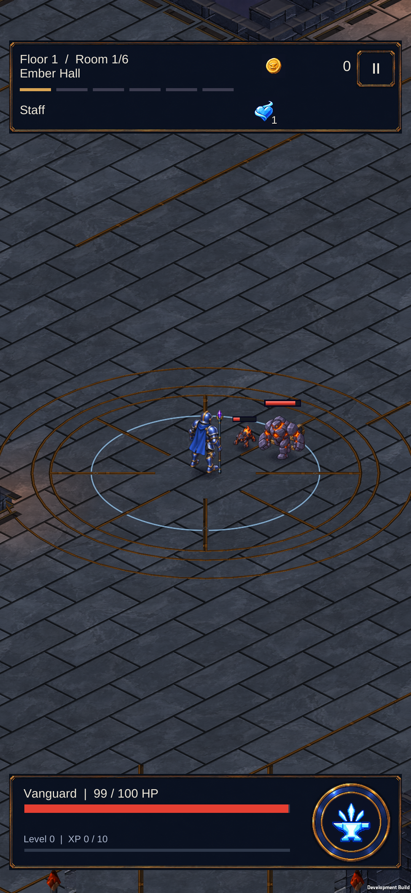

CRYPTFORGE / 24 EYLÜL 2026Boşluğun üzerinde: alt kemerler ve zincirler
Platformun altında kalın taş kemerler, derin taşıyıcılar, asılı zincirler ve fırın tahliye kanalları. Yürünen alan ve kamera aynı; görüntüler gerçek Unity sahnesinden.

Kemerler ve zincirler

Oyun kamerası

535 Unity testi geçti. Android paketi S23 telefona yüklendi ve oyun açıldı.
Telefonda
Oyun sahibine açık ve çalışır durumda bırakıldı.

Bu turda yeni resim üretilmedi; mevcut taş ve demir malzemeleriyle Unity geometrisi işlendi. Kapsam ve doğrulama kaydı